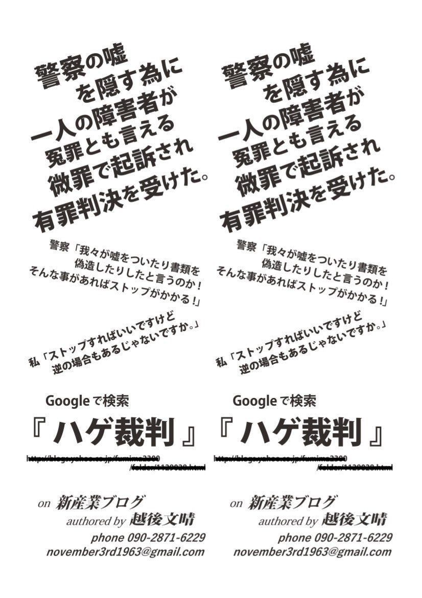
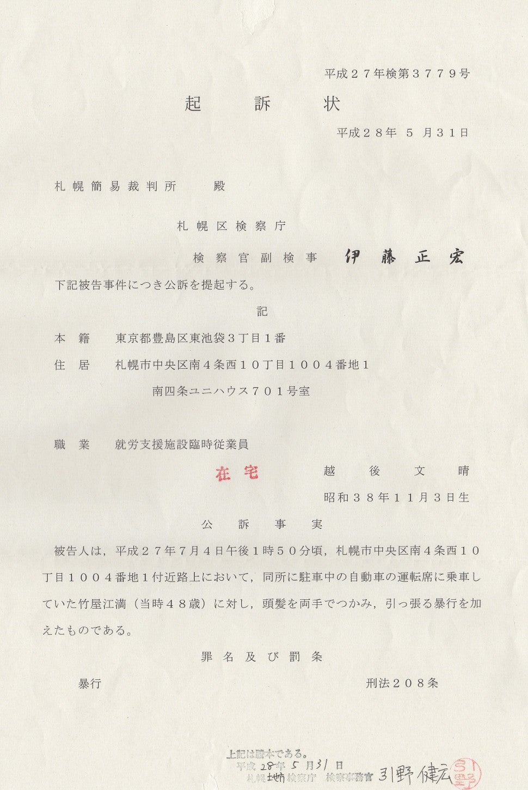

2016-06-30
暴行事件の控訴棄却後に街頭で配ったチラシです。
(2021.8.29 YahooブログのURLをマスク)

"警察の嘘を隠す為に 一人の障害者が 冤罪とも言える 微罪で起訴され 有罪判決を受けた。
警察「我々が嘘をついたり書類を偽造したりしたというのか! そんなことがあればストップがかかる!」
私「ストップすればいいですけど 逆の場合もあるじゃないですか。」
Googleで検索 『ハゲ裁判』 http://blogs.yahoo.co.jp/fumima2300/folder/1129028.html(デッドリンク)
on 新産業ブログ authored by 越後文晴
phone 090-2871-6229 november3rd1963@gmail.com"
こんにちわ越後文晴です。
インターネットでの情報発信とプライバシーとの兼ね合い、これまでの「言論の自由 vs. 名誉毀損」は主にマスコミの活動を対象にしたものだったが、当事者が直接情報を発する場合はそれに加えてこれまでとは違う観点が必要だ。それを主張しての取調室での攻防。パソコン・スマートフォン・タブレットを押収されてプライバシーを性的嗜好まで見られ、苦痛と不自由を強いられた日々。
その結果は不起訴処分。
しかし同じ相手への別の件で起訴されました。

起訴状
平成27年検第3779号
起訴状
平成28年5月31日
札幌簡易裁判所 殿
札幌区検察庁
検察官副検事 伊藤正宏
下記被告事件につき公訴を提起する。
記
本籍 東京都豊島区東池袋3丁目1番
住居 札幌市中央区南4条西10丁目1004番地1 南四条ユニハウス701号室
職業 就労支援施設臨時従業員
越後文晴
昭和38年11月3日生
公訴事実
被告人は, 平成27年7月4日午後1時50分頃, 札幌市中央区南4条西10丁目1004番地1付近路上において、
同所に駐車中の自動車の運転席に乗車していた竹屋江満(当時48歳)に対し,
頭髪を両手でつかみ,引っ張る暴行を加えたものである。
罪名及び罰条
暴行 刑法208条
昨年、7月に私の自宅マンション前に(白色のメルセデス・ベンツS600に乗って)現れた 竹屋江満 という人の髪の毛を引っ張ったから、暴行罪で、ということです。
一昨年、 竹屋江 満 と初めて接触した時に私が竹屋江氏から暴力を振るわれた事件について書いた ブログの記事 (削除済)
2014年10月16日「郵便局の夜間窓口で絡んできたこの男は誰?」スクリーンショット
これについて名誉毀損の罪を問われ警察から捜査を受け、不起訴となりました。
なぜこのような事になったのか? インターネットの名誉毀損で容疑者になるとどのようなことがあるのか? どんな捜査を受け、私はどのように抗ったか?についてもお話ししたいと思います。
以前の記事 「ミート・ザ・恥知らず」 と同じテーマですが、こんな事(竹屋江氏と初めて会った時に彼から受けた暴力)にどう対処すればいいのだろう? どうすればこのような暴力を防ぐことができるのだろう? といったことも。
そして警察の不可解な動き。
最初に私が被害を受けた暴行事件はちゃんと捜査してくれたのか? 警察は納得できる説明をしてくれないどころか、 あえて言いますけど、"こんな些細な事" で逆に私の方を暴行罪で事件化して起訴したんです! 私はこの事に限っては竹屋江氏に謝罪してもいいと警察官に伝えたのに!
一体どうなってるんだ!!!
警察署、北海道警本部、検察に情報の開示を求めて奔走し、 弁護士・司法書士へ相談と助けを求めて訪ねて行き、 権力の壁から漏れる光をかき集めて浮かびあがってきた疑惑。 警察・検察がちゃんと説明してくれないから私の推論を言っちゃいますけど・・
そのキーワードは『情報開示』。 『"行政文書"と"刑事訴訟法にかかる訴訟に関する書類"の違い』じゃないかと睨んでるんですけどね! あと、もっとゲスなこともあったんじゃないかとguessしておりますがっ!!!
追記17.6.11 多分、そっちのゲスな方です。追記終了
事件の発端は竹屋江氏が私にイチャモンをつけ、 「ハゲ」、「ハゲじじい」、「海へ帰れハゲ坊主」、 「頭の皮膚の具合を見るとお前かなり若い時からハゲてたんだろうな、さぞかし苦労しただろう」 と公衆の面前で私の頭髪の状態のことを執拗に侮辱してきたことです。
それで彼が私の自宅マンション前に現れた時に 「お前、俺のことを "ハゲ、ハゲ" と馬鹿にしてたけどその髪の毛は本物なのか?」 と言って自虐的な冗談のつもりで竹屋江氏の髪の毛に手をかけたのですが。
そんな事から一連の事件とこの裁判を "ハゲ裁判" と名付けたいと思います。
その第一回公判は
2016年7月11日(月)午前11時、札幌簡易裁判所204号法廷。
このブログの他にツイッター (@23HAL) でも #ハゲ裁判 のハッシュタグで逐一ツイートしていきます。
あー、何からどんな風に書いていったらいいのか・・ 3つの事件、警察への疑惑。 とりあえず時系列に沿ってお話しするべきかな。じゃ、次回。
keywords: 警察 検察 裁判所 不祥事 隠蔽 隠ぺい 道警 北海道警察 札幌地検 札幌簡易裁判所 札幌地方裁判所 札幌高等裁判所 刑事訴訟法 情報公開 公文書 行政文書 司法文書 偽造 おかしな裁判 奇妙な裁判 冤罪 はげ 禿 はげ裁判 禿裁判 発達障害 絶望の裁判所 ニッポンの裁判 黒い巨塔 弁護士 司法ムラ 日本の異常な司法 "We are all Carlos Ghosn"